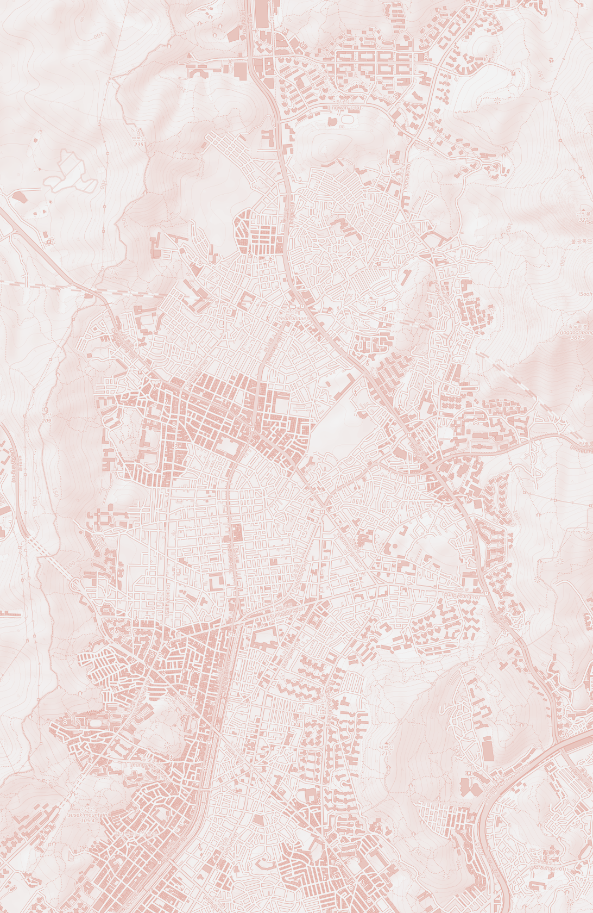
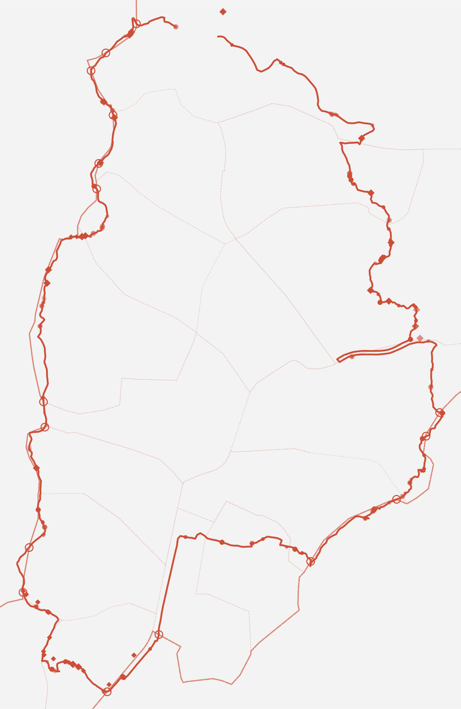

은평둘레길은 다섯 코스다. 봉산해맞이길, 앵봉산 생태길, 이말산 묘역길, 은평 북한산 둘레길, 백련산 불광천길. 코스마다 산이 하나씩 붙어 있다.
산에는 경계가 없다. 능선은 북한산에서 앵봉산까지 하나로 이어진다. 선을 그은 것은 사람이다. 길에 번호가 붙고 구와 동이 나뉘었다.
2026년 10월 25일, 그 다섯을 하루에 이어 달렸다. 아래 능선은 그날 발밑을 지나간 높이다. 가장 높은 곳이 233m, 가장 낮은 곳이 18m였다.
점 하나가 사진 한 장이거나 영상 하나다. 점의 짙고 옅음은 그 순간의 심박이다.
코스를 열 구간으로 나누고 각 구간에서 심박이 가장 높았던 사진을 한 장씩 골랐다. 구도가 아니라 몸 상태가 기준이다. 초점이 흐려진 것도 그대로 두었다.
같은 하루를 위에서 내려다보면 하나의 선이 된다. 시작과 끝이 맞닿은 닫힌 고리다. 고리 안쪽은 비어 있고 그곳에 도시가 들어서 있다.
점선은 행정구역의 경계다. 서쪽으로 접어들면 경계선은 달려온 길과 거의 겹친다. 산을 하나로 잇는 능선이 동시에 은평과 고양을 가르는 선이다.
실제로 경계의 높이를 재어 보았다. 은평과 고양을 가르는 7.49km 가운데 70.3%가 분수령에 해당했다. 반면 은평과 마포 사이에서는 0%였다. 도시 구간의 경계는 능선이 아니라 길을 따른다.


종이에 담은 건 249컷 가운데 열 장이다. 나머지는 웹에 있다. 화면 아래쪽에 코스 전체의 고도 그래프가 깔려 있다. 손가락으로 훑으면 그 지점에서 찍은 사진과 영상이 나온다. 심박이 높았던 구간일수록 화면이 더 흔들린다.
카메라를 켜면 손으로도 넘어간다. 손을 펴고 달리듯 번갈아 저으면 한 번에 한 컷씩 간다. 영상은 기기 안에서만 처리하고 어디에도 보내지 않는다.